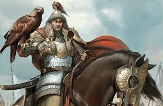
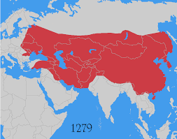

Founder
Name: Genghis Khan (born Temüjin)
Founded: 1206, upon unification of the Mongol tribes
Accomplishments: United the Mongol tribes, launched conquests across Eurasia, and established the largest contiguous land empire in history. Introduced the Yam communication system and promoted religious tolerance.
Cause of Death: Uncertain—possibly battle injuries or a fall from his horse
Location: Near the Liupan Mountains, Western Xia territory
Greatest Achievements
- Unified Mongol tribes under a single banner
- Conquered vast territories from China to Eastern Europe
- Established the largest contiguous land empire in history
- Created the Yam system for rapid communication
- Promoted religious tolerance and meritocracy
Major Defeats
- Failed to conquer Japan due to typhoons (Kamikaze)
- Defeated at the Battle of Ain Jalut (1260) by the Mamluks
- Internal fragmentation after Kublai Khan's reign
Timeline
- 1206: Temüjin declared Genghis Khan, ruler of all Mongols
- 1215: Capture of Zhongdu (Beijing)
- 1227: Death of Genghis Khan
- 1241: Mongol invasion of Europe reaches Hungary and Poland
- 1260: Defeat at Ain Jalut halts western expansion
- 1271: Kublai Khan founds the Yuan Dynasty in China
- 1294: Death of Kublai Khan; empire begins to fragment
Empire Map
Fortified Holdings
Held: Khara-Khoto Fortress – desert stronghold in Western Xia, seized by Genghis Khan.
Held: Karakorum Fortress – imperial base and early capital in Mongolia’s Orkhon Valley.

Held: Bam Citadel – ancient Persian fortress known for its mudbrick architecture.

Held: Derbent Fortress – strategic gateway between the steppes and Persia.

Held: Ghazni Citadel – Afghan stronghold captured during Mongol expansion.

Contested: Xiangyang Fortress – Song dynasty bastion besieged for years by Mongol forces.

Contested: Maymun-Diz – Persian mountain fortress that resisted Mongol siege.

Contested: Crac des Chevaliers – Crusader stronghold in Syria, targeted but never taken.

Contested: Kraków Castle – Polish fortress raided during Mongol incursions into Europe.

Contested: Esztergom Castle – Hungarian stronghold resisting Mongol invasion in 1241.

Lost: Alamut Castle – retaken by local powers after Mongol decline in Persia.

Lost: Baghdad Citadel – lost after the fall of the Ilkhanate and Mongol fragmentation.

Lost: Gwalior Fort – Indian fortress that resisted Mongol control and later reclaimed.

Lost: Samarkand Citadel – fell to the Timurid Empire after Mongol authority waned.

Lost: Tatung Fortress – Yuan stronghold lost during the Ming uprising in China.
Troop Units
Core: Mongol Horse Archers — fast, deadly, and tactically dominant.
Cavalry: Heavy Cavalry — armored shock troops used in decisive charges.

Specialist: Siege Engineers — experts in Chinese and Persian siege technology.
Support: Chinese Engineers — crucial in campaigns against walled cities in China and Central Asia.

Support: Persian Artillery Specialists — provided mangonels and trebuchets for fortress assaults.
Auxiliary: Turkic Cavalry — light and medium cavalry used for flanking, pursuit, and reinforcement.
Naval: Korean Naval Units — contributed ships and sailors during invasions of Japan and East Asia operations.
Infantry: Chinese Infantry — massed foot soldiers for garrisons, urban combat, and support roles.

Special: Shamanic Units — spiritual advisors and ritual specialists, used for morale and divination.